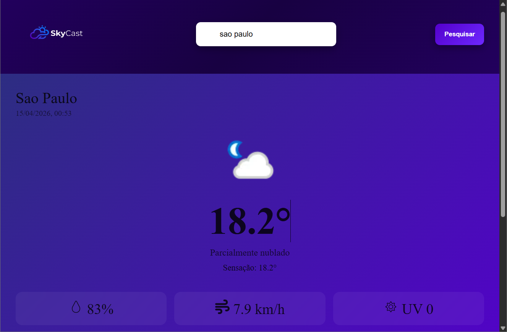
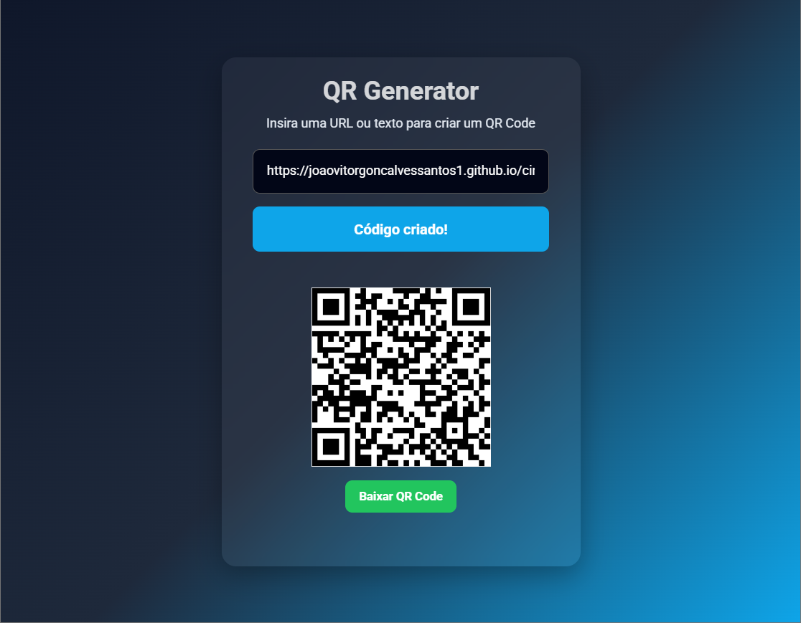
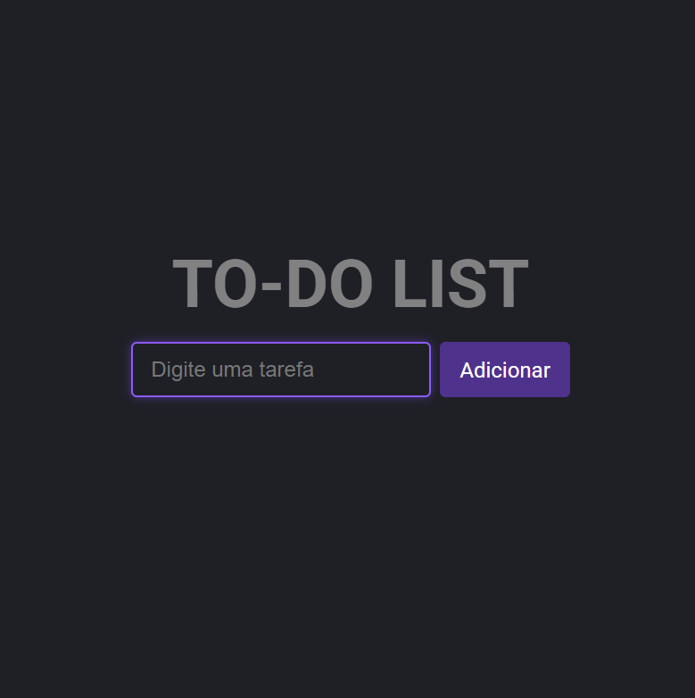
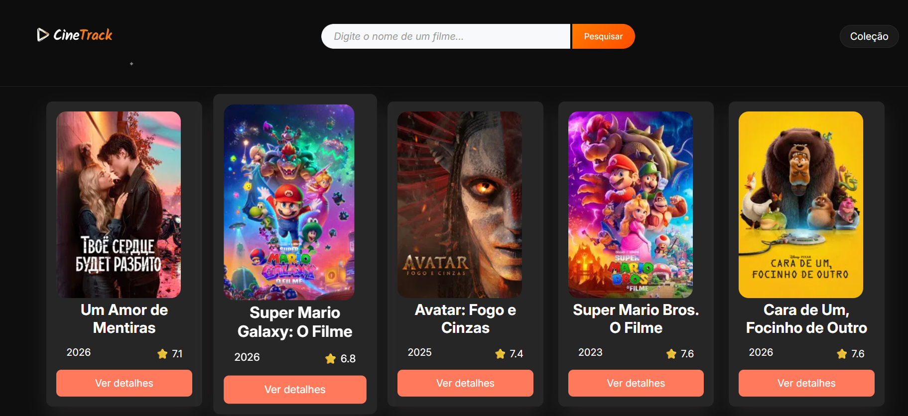
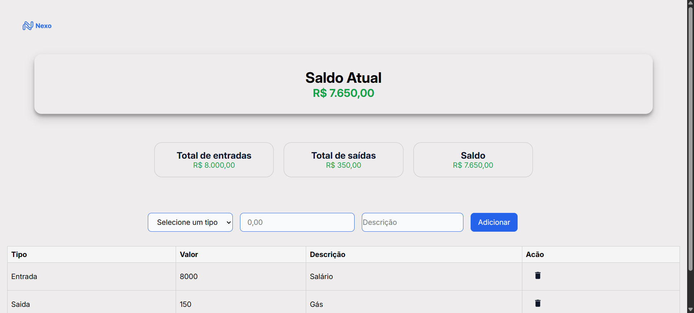

Desenvolvedor em formação
Desenvolvedor em formação com foco em Front-end e evolução para Full Stack. Crio interfaces modernas e funcionais, enquanto desenvolvo conhecimentos em banco de dados e SQL para construir aplicações completas, unindo experiência do usuário com estrutura de dados eficiente.
Sobre mim
Atualmente curso Engenharia de Software e complemento minha formação com estudos práticos por meio da plataforma Alura, onde desenvolvo projetos e aplico conceitos reais de desenvolvimento web.
Tenho foco em Front-end, utilizando JavaScript e iniciando meus estudos em React, enquanto também aprofundo meus conhecimentos em banco de dados e SQL.
Busco evoluir para Full Stack, criando aplicações completas que conectam interface, lógica e dados, com o objetivo de conquistar minha primeira oportunidade na área de tecnologia.
Tecnologias
Formação & Certificados
Engenharia de Software
Unopar / Anhanguera (EAD)
Programador Web
Instituto Federal do Rio Grande do Sul • 200h
Banco de Dados & SQL
IFRS + Cursos complementares • +90h
JavaScript & Front-end
Alura • HTML, CSS e JavaScript
React (em andamento)
Alura • SPA com React Router
Lógica de Programação
IFRS + Alura
Meus Projetos

SkyCast
Problema: Dificuldade em acessar informações climáticas rápidas e claras.
Solução: Aplicação que consome API de clima e exibe dados em tempo real de forma simples.
Ver projeto
Gerador de QR Code
Problema: Falta de ferramentas rápidas para gerar QR Codes personalizados.
Solução: Aplicação simples que gera QR Codes instantaneamente a partir de qualquer texto ou link.
Ver projeto
To-do List
Problema: Dificuldade em organizar tarefas do dia a dia.
Solução: Aplicação para gerenciar tarefas com adição, remoção e controle simples.
Ver projeto
CineTrack
Problema: Dificuldade em organizar e acompanhar filmes e séries assistidos.
Solução: Aplicação que permite ao usuário registrar, visualizar e gerenciar conteúdos assistidos de forma simples e intuitiva.
Tecnologias: HTML, CSS, JavaScript
Ver projeto
Nexos
Problema: Falta de controle claro sobre entradas e saídas financeiras no dia a dia.
Solução: Sistema de controle financeiro que permite registrar transações e acompanhar o saldo de forma prática.
Tecnologias: HTML, CSS, JavaScript
Ver projeto